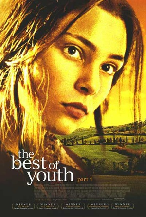

经典台词
- 生命可以归结为一个简单的选择：要不忙于生存，要不赶着去死。
- 正义的天平也许偶有偏差但终将回归正义。
- 我们这一生最遗憾的事情之一，就是把最糟糕的一面留给了我们最亲近的人。
- 说的一辈子，差一年，一月，一天，一个时辰，都不算一辈子。
- 没有人的人生是完美的，但生命的每一刻都是美丽的。
- 生命就像一盒巧克力，结果往往出人意料。
- 当你挽救了一条生命就等于挽救了全世界。
- 以生活的真谛而不是世俗的眼光探寻真相。
- 当你挽救了一条生命就等于挽救了全世界。 
- 你喜欢书本是因为你随时可以放弃他们，但人生有别，常常不由你做主。